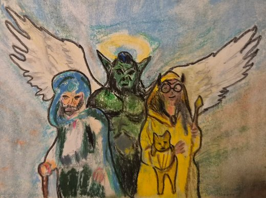

Arc 4 : Le Voïvode et le Kiriadum
L'hiver
")
Le duché de Bromaël est envahi par les Ouromans, et les héros viennent à la rescousse. Surprise : c'est le Voïvode Brancovan qui a uni les tribus ouromanes, et il porte la couronne des rois de Leomance. Retranché dans son château de Canderas assiégé, le duc de Bromaël doit son salut aux héros. Mais dans leur retraite, les Ouromans détruisent les réserves de grain du pays. L'hiver qui commence annonce une grande famine.
Le duc confie aux héros la mission de neutraliser le Voïvode. Selon un ancien rituel, le roi de Leomance verse le Vin de Vanaël dans le volcan Kiriadum, à la première pleine lune de l'hiver : les héros s'y rendent, en espérant y trouver Brancovan. En route, ils s'abritent d'une tempête de neige dans une grotte et y trouvent un vieux sač couvert de runes. En cuisinant dedans avec certaines épices, ils font apparaître le djinn Ali Pashino, qui leur remet une émeraude au pouvoir divinatoire. ⚑ Les quatre gemmes de Wayland
Dans les galeries du Kiriadum, ils retrouvent le Voïvode, blessé par des gobelins. Avec l'aide de la fée Embla, qui change un champignon en géant combattant, ils viennent à bout des gobelins et reprennent la couronne. Le Voïvode les convainc de faire le rituel : quand ils versent le Vin de Vanaël, un chant monte des profondeurs, repris par une myriade d'oiseaux.
En invoquant Epharel, Azog se trompe dans la prononciation et crée une distorsion temporelle. Les héros se retrouvent dans le passé, au temps où Wayland et Ochlus étaient encore amis, et jouent les entremetteurs entre Wayland, Ochlus et Kylima. Sous l'influence divine, le Voïvode tombe amoureux de Kaelis, sans retour. Comme dans la légende, Wayland, jaloux, enferme Ochlus sous la montagne, puis renvoie les héros dans le présent, agacé par leurs gesticulations.
De retour, le Voïvode est jugé par le duc, qui en fait son commis de cuisine. Apaisée par le rituel, la nature raccourcit l'hiver, et la famine est évitée. Les âmes de l'armée des morts sont de nouveau acceptées par le dieu souterrain, et Kaelis leur donne les rites funéraires avant de leur offrir une dernière sépulture.


")
")
")